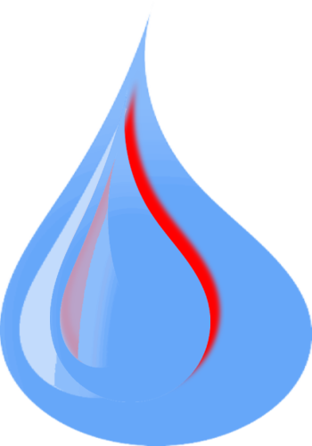

Clear
Right Sidebar Only. File Name
¶
Set this page to have only the right side bar by adding the extension
.right
to it file name.
Example
¶
test.right.rst
Left Sidebar Only. File Name
Left Sidebar Only. Theme Option
Page Contents
Right Sidebar Only. File Name
Example
Previous topic
Left Sidebar Only. File Name
Next topic
Left Sidebar Only. Theme Option
This Page
Show source
Edit on Github